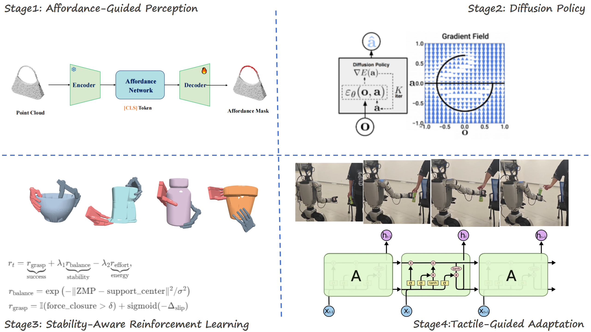

Achieving robust object grasping with humanoid robots, while maintaining dynamic balance across diverse object geometries and weights, remains a significant challenge in dexterous manipulation. In this work, we present L2G (Learning to Grasp), a novel framework integrating affordance-guided perception with diffusion policy reinforcement learning to enable the humanoid robot to autonomously grasp objects with varying physical properties (0.5-2.5 kg weight, 10-20 cm size). Our approach combines 3D visual affordance maps for task-oriented spatial reasoning with a diffusion-based policy that generates temporally consistent motion sequences, ensuring smooth force transitions and balance preservation. Leveraging NVIDIA Isaac Gym for multi-object simulation, we train the system to adaptively adjust grasping strategies through proprioceptive feedback and environmental affordances. The policy coordinates whole-body control through an impedance-based controller, dynamically optimizing contact forces and stability margins.

The L2G system is designed to enable the humanoid robot to autonomously grasp diverse objects through a unified pipeline combining perception, policy learning, and dynamic execution. The framework operates in NVIDIA Isaac Gym, a GPU-accelerated simulation environment, which generates randomized training scenarios with objects varying in geometry (10–20 cm), weight (0.5–2.5 kg), and material properties. A multi-stage training protocol is employed.
A shared neural network learns to predict grasp affordances (optimal contact regions) across object categories by correlating geometric features (extracted from RGB-D data) with physical constraints (mass, friction). This allows generalization to unseen objects by mapping latent affordance representations.
A reinforcement learning agent, trained via Proximal Policy Optimization (PPO), generates whole-body motion sequences that balance grasp success and stability. The policy takes affordance maps, proprioceptive states, and environmental feedback as inputs, outputting coordinated arm trajectories and balance adjustments.
Affordance is defined as the actionable possibilities that objects offer an agent based on their intrinsic properties and the agent’s capabilities . The Affordance Network encodes each affordance as a 3D contact point coupled with a motion trajectory, learning dual “where” and “how” representations from prior demonstrations. Static and dynamic alignment techniques match and adapt retrieved examples to novel objects, while a diffusion-based policy generates diverse yet precise candidate actions by conditioning on point clouds, joint states, and trajectory embeddings . Affordance Memory organizes entries by task—each entry pairing a label, contact point, trajectory, visual embedding, and full scene point cloud—to enable rapid retrieval and geometric registration for generalization . Finally, 3DAffordanceLLM reframes detection as an Instruction Reasoning Affordance Segmentation task, fusing point cloud and text embeddings in a transformer with a special token to output per-point affordance masks for open-vocabulary commands
Diffusion Policy employs a denoising diffusion probabilistic model (DDPM) to learn a reverse process that transforms noisy sequences into smooth, physically plausible action trajectories. Trained on diverse Isaac Gym grasping scenarios—objects weighing 0.5–2.5 kg and measuring 10–20 cm—the model ensures smooth force transitions and balance preservation. Real-time performance is achieved via adaptive noise scheduling and reduced sampling steps, with proprioceptive feedback guiding denoising to adapt to environmental variations. The diffusion-generated commands are executed by an impedance-based whole-body controller that dynamically adjusts joint stiffness and damping based on predicted contact forces within a hierarchical task framework. Finally, a grasp pipeline uses low-stiffness probing to refine affordance maps before executing a high-stiffness force-closure grasp, demonstrating high success rates in both simulation and real-world trials